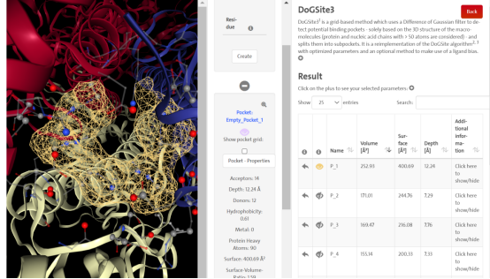
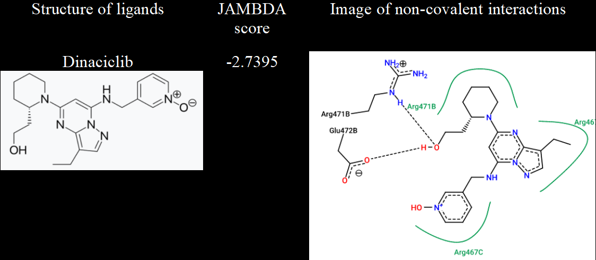
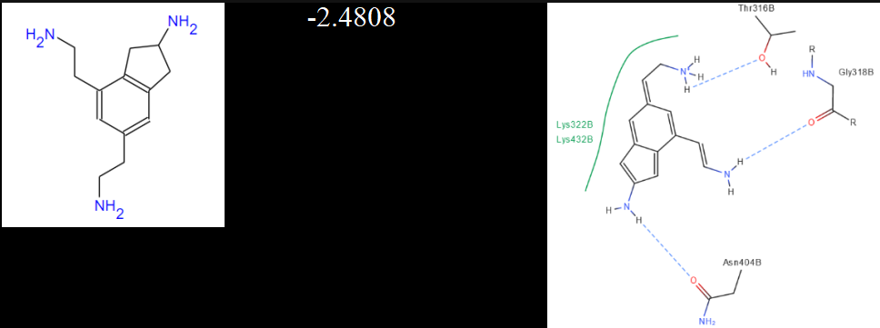
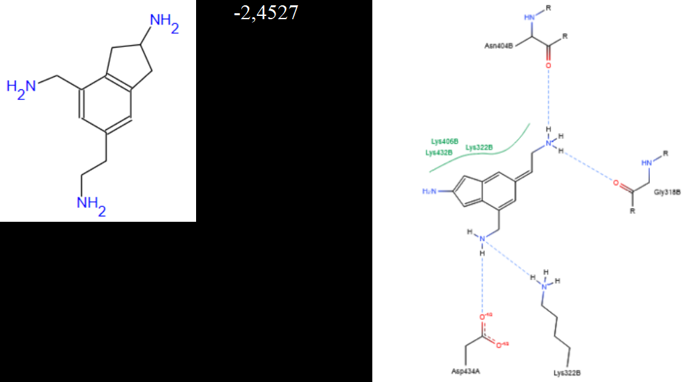
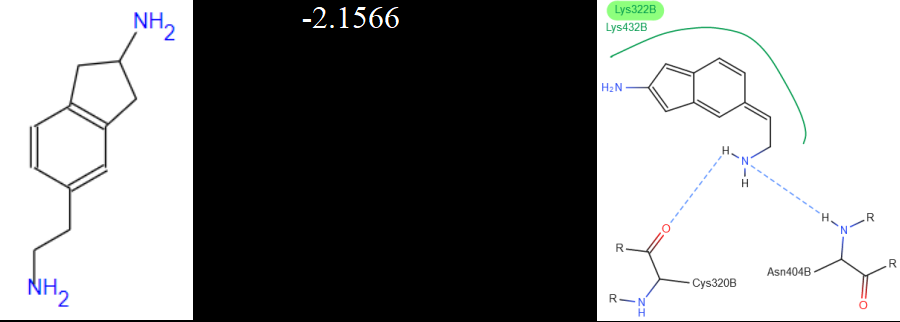

Workflow
Процесс работы
Target selectionВыбор мишениSelected Influenza A H3N2 hemagglutinin, NCBI ABB46547.1.Выбран гемагглютинин Influenza A H3N2, NCBI ABB46547.1.
Sequence-set curationФормирование выборкиNarrowed the sequence period to meet the phylogenetic tool limit.Период выборки сужен с учётом ограничения инструмента филогенетики.
Structural-model reviewПроверка моделиCompared templates and reviewed model geometry with a Ramachandran plot.Сопоставлены шаблоны, геометрия модели проверена по карте Рамачандрана.
Binding-site analysisАнализ сайта связыванияPredicted and compared candidate pockets with DoGSite3.Кандидатные карманы спрогнозированы и сопоставлены в DoGSite3.
Docking and pose reviewДокинг и анализ позPrepared ligands, ran JAMDA and reviewed selected interactions in PoseEdit.Подготовлены лиганды, выполнен JAMDA-докинг и просмотр взаимодействий в PoseEdit.
Reported coursework outputs
Результаты учебных расчётов
The figures below document selected poses and non-covalent interaction diagrams generated during the training workflow. Several candidate structures were not recognised or did not return valid scores, highlighting practical data-format and interoperability limitations.
Ниже показаны выбранные позы и диаграммы нековалентных взаимодействий, полученные в учебном процессе. Некоторые структуры не распознавались или не давали корректных оценок, что показало практические ограничения форматов и совместимости данных.




Target selectionStructural-model reviewBinding-site predictionLigand preparationMolecular dockingInteraction analysisCritical interpretation